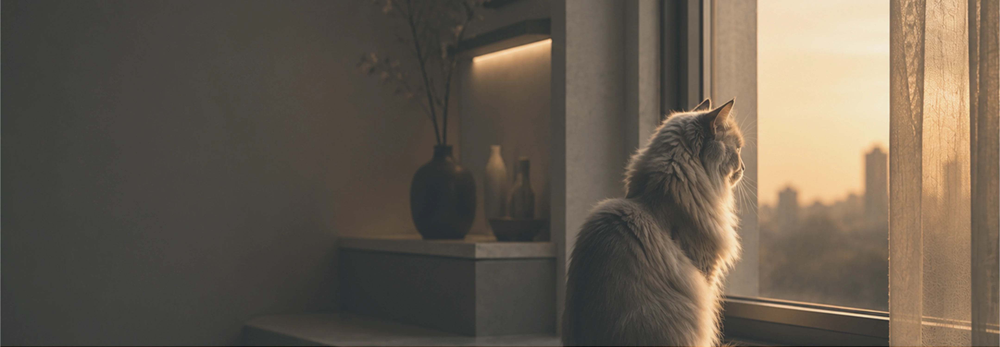
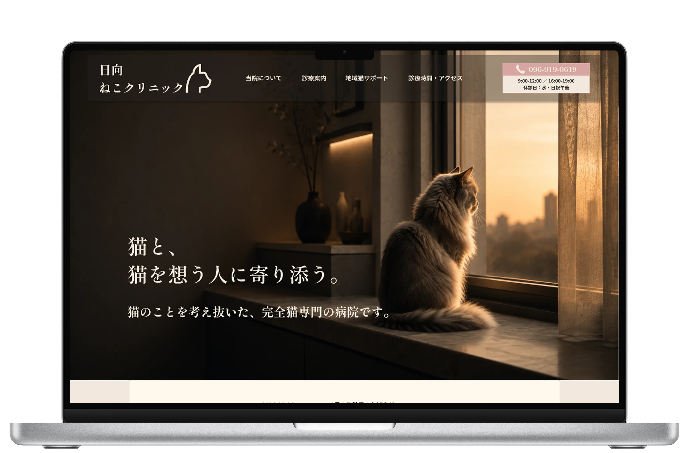
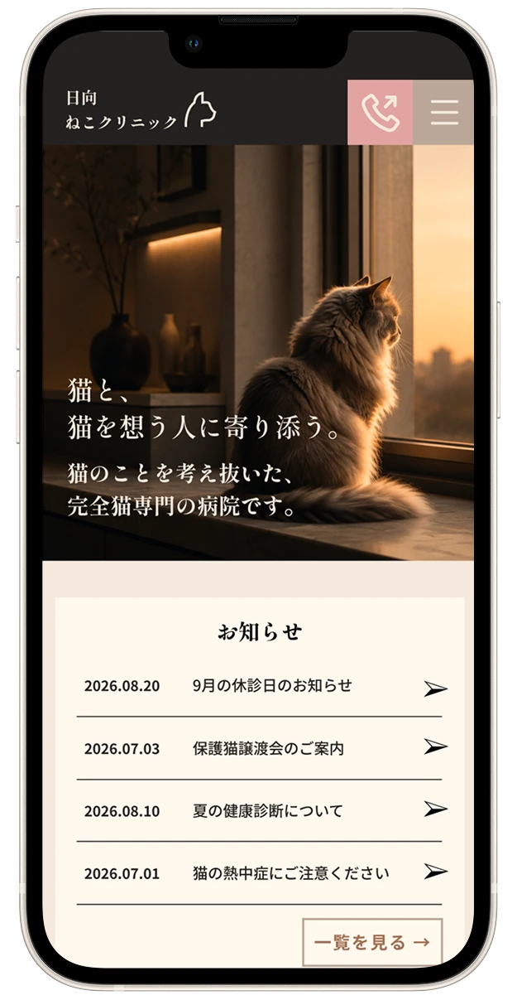
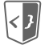

日向ねこクリニック


制作期間
ワイヤーフレーム：2日
デザイン：3日
コーディング：2日
使用ツール
Figma

HTML/CSS
概要
猫専門動物病院「日向ねこクリニック」の架空Webサイトです。
猫の特性に配慮した診療と、猫・飼い主双方が安心できる環境を伝える病院サイトとして制作しました。
ターゲット
20代以上の猫の飼い主。
猫の健康にしっかり向き合いたい人や、他の動物の存在にストレスを感じやすい猫にできるだけストレスの少ない環境で診療を受けさせたい人。
サブターゲットとして、地域猫の活動に関わる人や、地域で暮らす猫を気にかけている人を設定。
目的
猫専門の動物病院としての特徴や診療方針をわかりやすく伝え、猫の健康について悩んでいる飼い主が安心して相談・受診できるようにすることを目的としています。
コンセプト
「猫のためだけに、つくられた病院。」
猫の特性やストレスを考えた専門性と、猫・飼い主へのやさしさが伝わるサイトを目指しました。
犬の鳴き声や匂い、他の動物の気配が苦手な猫にも配慮した完全猫専門の病院として、猫に多い病気や猫特有の行動・性格を理解した診療を提供することを表現しています。
デザイン
猫の体調不良で焦っている人も訪れることを想定し、ナビゲーションは日本語で統一して、必要な情報を直感的に探せるようにデザインしました。
また、どのページからでもすぐに相談できるよう、電話番号と診療時間をヘッダーに固定しています。
一般的な動物病院に多いカラフルな配色やポップなイラストはあえて使用せず、アイボリーやブラウンをベースに、肉球をイメージしたピンクをポイントカラーとして取り入れました。
猫らしい気高さや繊細さを表現しながら、清潔感・安心感・専門性・やさしさが伝わる、落ち着いたデザインを目指しました。